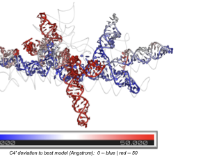

Projects
quartic detection theory, hidden variables, SpecRNA-QA, RNA quality assessment, structure-function coupling, spectral methods
Current Programs
Research Projects
Theory-driven research programs spanning statistical physics, spectral methods in structural biology, and brain network analysis.
A series of papers establishing exact detectability theory for hidden degrees of freedom on statistical manifolds. Read the full theory note →
We prove that hidden variables are orders of magnitude harder to detect than classical statistics predicts. When a hidden force couples linearly to the dynamics but quadratically to the observables — the generic case for power spectra, covariances, and correlations — the data requirement scales as \(\lambda^{-4}\), not \(\lambda^{-2}\). For a 10% coupling, this quartic penalty demands ~1000× more data than the naive Fisher-information expectation.
Core results:
- Quartic detection law: \(D_\mathrm{KL}^\mathrm{min}(\lambda) = C\lambda^4 + O(\lambda^6)\) on general statistical manifolds, with exact system-specific coefficients
- Pairing principle: A single probe is provably blind to hidden common input; detection requires \(\geq 2\) channels, with power growing as sensor pairs \(\binom{n}{2}\)
- Spectral dark regime: At timescale coalescence the quartic coefficient vanishes — hidden forcing becomes spectrally invisible
- Cross-spectral escape: Off-diagonal spectral structure breaks the single-channel impossibility, remaining strictly positive at coalescence
- Thermodynamic bridge: Cross-spectral detectability certifies positive entropy production, linking observable structure to the arrow of time
Mathematical toolkit: Information geometry (Amari), Kullback-Leibler projection, semiparametric efficiency (BKRW), Whittle likelihood, Mori-Zwanzig coarse-graining, stochastic thermodynamics (Seifert), spectral analysis on statistical manifolds.
Papers in this series:
- Why Single Probes Cannot Detect Hidden Forcing: A Quartic Detection Law — under review, PRL
- Cross Spectra Break the Single-Channel Impossibility — under review, PRL
- Timescale Coalescence Makes Hidden Persistent Forcing Spectrally Dark — under review, PRE (arXiv:2603.20917)
- Conditioning on a Volatility Proxy Compresses the Apparent Timescale of Collective Market Correlation — under review, PRE (arXiv:2603.14072)
SpecRNA-QA: Spectral Graph Methods for RNA 3D Quality Assessment
A lightweight, reference-free tool for assessing RNA 3D structure quality using spectral graph features. GitHub · Read the method note →

Existing RNA quality assessment methods evaluate local atomic contacts — they fail when local structure is correct but entire domains are misplaced. SpecRNA-QA solves this by extracting multi-scale spectral features from the graph Laplacian of RNA contact networks, capturing global topology that local metrics miss.
Performance:
- CASP16 benchmark (42 targets, 7,368 models): median Spearman \(\rho = 0.689\) in supervised mode, outperforming geometry-based baselines (\(\rho = 0.465\)) with \(p = 1.2 \times 10^{-10}\)
- Large RNAs (>200 nt): performance advantage reaches \(+0.233\) in correlation over geometry baselines — the regime where global topology matters most
- Fast: 15 ms for 100-nt structures, ~4.2 s for 800-nt molecules. CPU-only, no GPU required
How it works: Contact graphs at multiple distance thresholds → ~312 spectral features from normalized Laplacian (eigenvalue statistics, heat-kernel traces, participation ratios) → XGBRanker model for quality prediction. The most discriminative features are heat-kernel traces measuring multi-scale diffusion, connecting RNA quality to the transport geometry of the contact network.
Papers:
- Spectral Graph Features Capture Global Topology for Reference-free RNA 3D Structure Quality Assessment — under review, Briefings in Bioinformatics
- Spectral Coherence Index: A Model-Free Metric for Protein Structural Ensemble Quality Assessment — under review, IEEE JBHI (arXiv:2603.25880)
Structure-Function Coupling: Anatomy Sets the Stage
A spectral analysis framework revealing how gray matter morphometry constrains functional brain organization through a low-rank geometric subspace. Read the full note →

Gray matter explains only ~6% of functional connectivity variance — yet aligns with 45% of its directional subspace. This order-of-magnitude gap reveals that anatomy does not determine how strongly each individual’s brain connectivity deviates from the mean, but rather constrains the coordinate system in which functional variation occurs.
Key findings:
- Nuclear norm regularization on the GM→FNC coefficient matrix recovers a soft low-rank mapping (effective rank ~38)
- Subspace overlap \(O = 0.447\) at \(k=20\), with top 3 principal angles reaching cos \(\theta = 0.97, 0.95, 0.86\)
- The structure-coupled FNC subspace achieves AUC = 0.795 for schizophrenia classification — outperforming full FNC
- Validated across 3 datasets (\(N > 39{,}000\) total) with 7 benchmarked methods
Planned series: Paper 0 (GM-FNC, in preparation for NeuroImage) → Paper 1 (GM + WM decomposition, UK Biobank) → Paper 2 (unified probabilistic framework).
MultiViT / MultiViT2
Multimodal vision transformer frameworks for brain imaging analysis (2022–2024).
- Integrates structural MRI and functional connectivity data
- Achieves AUC 0.833 for schizophrenia classification (MultiViT)
- Data augmentation via latent diffusion models (MultiViT2)
- Published in NeuroImage, Human Brain Mapping, and IEEE ISBI